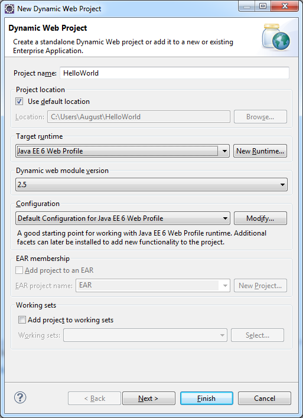
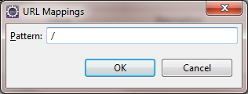

Using Java EE 6 Web Profile
SAP Cloud Platform is certified to support Java EE 6 Web Profile. If you want to use it in your applications, you have to develop them using SAP Cloud Platform SDK for Java EE 6 Web Profile.
- You have downloaded SAP Cloud Platform Tools. Make sure you download the SDK for Java EE 6 Web Profile. For more information, see Setting Up the Tools and SDK.
- If you have a previously installed version of SAP Cloud Platform Tools, make sure you update them to the latest version. For more information, see Updating the Tools and SDK.
-
The SDK brings all required libraries. In case you get an error with the import of a library, for example, javax.ejb.localbean, make sure you have set the SAP Cloud Platform Tools and the Web Project correctly.
First, create a basic HelloWorld application:
Then, equip the simple application with additional Java EE functionalities:
- Open your Eclipse IDE for Java EE Developers.
- From the Eclipse IDE main menu, choose
 File
File  New Dynamic Web Project
New Dynamic Web Project  .
. - In the Project name field, enter HelloWorld.
- From the Target Runtime section, select Java EE 6 Web Profile.
- For Web module version, choose 3.0.

- In the Configuration area, leave the default configuration. When you are working with the SDK for Java EE 6 Web Profile, your application is provisioned on Java 7 by default.
- Choose Finish.
For more information, see Creating a HelloWorld Application .
- On the HelloWorld project node, open the context menu and
choose New Servlet . Window Create Servlet opens.
- Enter hello as the Java package and HelloWorldServlet as the class name. Choose Next.
- In the URL mappings field, select /HelloWorldServlet and choose Edit.
- In the Pattern field, replace the current value with just
"/" and choose OK. In this
way, the servlet will be mapped as a welcome page for the application.

- Choose Finish to generate the servlet. The Java Editor with the HelloWorldServlet opens.
- Change the doGet(…) method so that it contains:
response.getWriter().println("Hello World!"); - Save your changes.
For more information, see Creating a HelloWorld Application.
- On the HelloWorld project node, open the context menu and choose New JSP file . Window New JSP file opens.
- Enter the name of your JSP file and choose Finish.
EJB components represent the business logic in a Java EE application.
- On the HelloWorld project node, choose File New Other EJB Session Bean . Choose Next.
- In the Create EJB session bean wizard, еnter test as the Java package and HelloWorldBean as the name of your new class. Choose Finish.
- Implement a simple public method sayHello that returns a greeting string. Save the project.
package test;
import javax.ejb.LocalBean;
import javax.ejb.Stateless;
/**
* Session Bean implementation class HelloWorldBean
*/
@Stateless
@LocalBean
public class HelloWorldBean {
/**
* Default constructor.
*/
public HelloWorldBean() {
// TODO Auto-generated constructor stub
}
public String sayHello() {
return "Hello from session bean";
}
}
- Create a reference from the servlet to the session bean:
@EJB private HelloWorldBean helloWorldBean;
- Change the doGet method to call the business method:
protected void doGet(HttpServletRequest request, HttpServletResponse response) throws ServletException, IOException { response.getWriter().println(helloWorldBean.sayHello());
- Create imports to the bean class and EJB API.
- Look up the HelloWorldBean using JNDI.
- Call the HelloWorldBean business method using a JNDI lookup.
<%@page import="javax.naming.InitialContext"%>
<%@ page language="java" contentType="text/html; charset=ISO-8859-1"
pageEncoding="ISO-8859-1"%>
<!DOCTYPE html PUBLIC "-//W3C//DTD HTML 4.01 Transitional//EN" "http://www.w3.org/TR/html4/loose.dtd">
<%@ page import = "test.HelloWorldBean" %>
<%@ page import = "javax.ejb.EJB" %>
<html>
<head>
<meta http-equiv="Content-Type" content="text/html; charset=ISO-8859-1">
<title>Insert title here</title>
</head>
<body>
</body>
</html>
<%
try {
InitialContext ic = new InitialContext();
HelloWorldBean h= (HelloWorldBean)ic.lookup("java:comp/env/hello.HelloWorldServlet/helloWorldBean");
out.println(h.sayHello());
}
catch(Exception e) {
out.println("error at client");
}
%>
You can test the application on the local runtime and then deploy it on SAP Cloud Platform.
For more information, see Deploying an Application on SAP HANA Cloud.
You can now use JPA together with EJB to persist data in your application
For more information, see Adding Container-Managed Persistence with JPA (Java EE 6 Web Profile SDK)